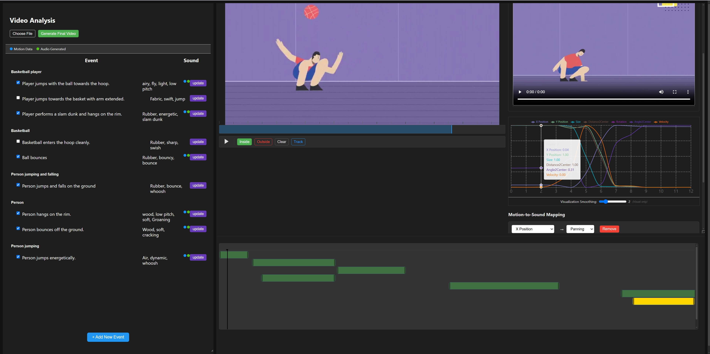
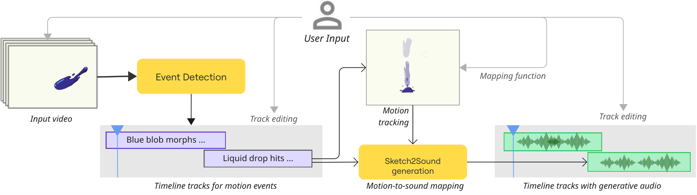

MoSound: An Interactive Tool for Generative Sound Design in Motion Graphics
Adding expressive sound to motion graphics typically requires both audio expertise and tedious manual work. MoSound is an interactive tool that streamlines this process: a vision-language model analyzes the video to detect visual events and suggest sound descriptions, while a motion-tracking interface lets users map object movement—position, velocity, size, etc.—to audio properties such as stereo panning and volume, generating a guide signal that spatially and temporally anchors the final generative sound effect.

How It Works

Event & Sound Analysis
A vision-language model (GPT-4V) analyzes the motion graphics video to identify key visual events—moments where objects appear, collide, or change direction—and proposes a short text description of the sound each event should produce. Users can review, edit, or add events before proceeding.
Object Tracking & Motion Mapping
For each event, MoSound tracks the relevant object through the clip and extracts motion features—screen position, velocity, size, and rotation. Users then choose which features to map to audio properties such as stereo panning and volume. The system synthesizes a guide audio signal that encodes the motion's spatial and temporal structure, giving the generative model a concrete behavioral target.
Sound Generation
The text description and the optional guide signal are passed to a generative audio model. The guide constrains the timing and spatialization of the output, while the description drives its timbral character—producing a final sound effect that is both semantically appropriate and synchronized with the motion.
Examples
Each example shows the final sound-design result. For every detected event we list its description, the optional motion-to-sound mappings that generate a guide audio signal, and the final generated effect.
Video Presentation
BibTeX
@inproceedings{MoSound,
author = {Huang, Jialin and Seetharaman, Prem and Langlois, Timothy and Wei, Li-Yi and Kazi, Rubaiat Habib and Gingold, Yotam},
title = {{MoSound}: {An} Interactive Tool for Generative Sound Design in Motion Graphics},
booktitle = {Proceedings of the ACM CHI Conference on Human Factors in Computing Systems},
series = {CHI},
year = {2026},
keywords = {sound synthesis, motion graphics, generative AI, vision-language models},
publisher = {Association for Computing Machinery},
address = {New York, NY, USA},
url = {https://doi.org/10.1145/3772318.3791162},
doi = {10.1145/3772318.3791162},
numpages = {13}
}